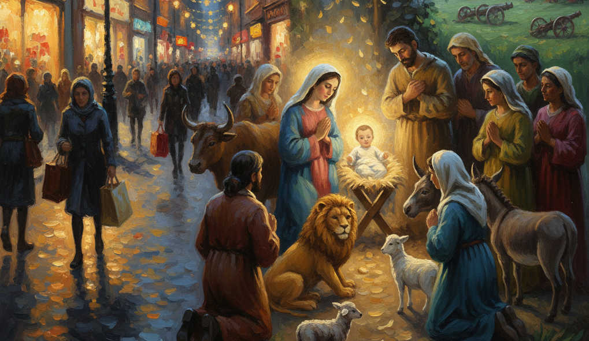

A Natale preferisco pensare in forma poetica, anche se non sono un poeta, ma un poetastro. Nel 2008 mentre viaggiavo in aereo per Vancouver (BC-Canada) mi sono messo a scrivere.
Quello che mi venne in mente pensando a quel povero “Cristo” non mi dispiacque. E lo pubblicai anche nel 2010 in “Ocean drops-Storia di una goccia” (bilingue). Misi questo titolo: “Sfidando ogni sfida”, immaginando di guardare con simpatia quella culla semplicissima nella stalla in mezzo alla natura, animali e a gente semplice, tra cui ovviamente la madre e il padre commossi, come ogni genitore. Osservai e pensai, tra me e me:
“E se invece del volto di un Dio
Incontrassimo nella grotta il desiderio di diventare Dio?
Desiderio nascosto nel mistero
E questo vagare nell’universo
che si scopre umano ad ogni tragedia
sin da quando il calore esplose in un cuore di carne.
E il “Logos-il Cammino” si è fatto carne, mistero dei misteri
scolpito a fuoco come sigillo.
È parola di comunione che da sempre ricerca se stessa e
si incontra in ogni frammento scolpito
tra le mani del tempo
mentre semina morte e dà vita a chi nasce.
Non lo intuisci nei sogni – impenetrabili - del tuo spirito?
E’ un giardino che mette le foglie tra i rovi
È il filo di erba che, esile Davide,
spacca il cemento nemico,
è il regno di un re senza trono che attende tranquillo
le acque che scendono a valle, trascinando le scorie di imperi di creta
e di vitelli d’oro e arroganza
Lo senti che avanza
dal futuro delle nostre speranze
Gli hanno incollato il nome di “Dio” o “D-o”
ma il suo nome è: Regno di sguardi,
è: Regno di giustizia, di amore, di pace
Il leone ormai siede in giardino con accanto l’agnello
i cannoni sono diventati aratri nei campi.
E’ il Natale che arriva
Il vero Natale che nasce ogni giorno
dove anche tu, anche io siamo luce che umilia la notte
e diffonde calore, spalanca le porte
per far entrare il futuro
… con ogni persona di volontà buona
cittadini di un regno nuovo
che si incontrano davanti alla culla, da ogni dove
mentre il silenzio ci avvolge di serenità e di gioia
e sboccia il canto della riconoscenza
Il desiderio del nuovo Natale, quello vero,
diventa carne nella culla del mondo.
Don Gianni Carparelli